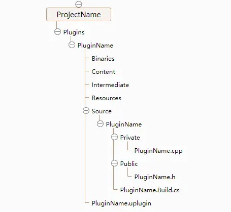

Carla 插件

- Binaries：编译后的dll文件存放位置
- Content：游戏资源Asset文件存放位置
- Intermediate：编译的中间文件存放位置
- Resources：一般为图标的存放位置
- Source：代码存放位置
- .uplugin：插件模块配置文件，JSON格式
- .Build.cs：每个.Build.cs文件声明派生自ModuleRules基类的类，并设置属性控制器从构造函数进行编译的方式。由虚幻编译工具编译，并被构造来确定整体编译环境。使用C#语法。
插件的描述文件 Carla.uplugin
Carla.uplugin 是插件json格式的插件描述文件，可以在插件编辑器中进行修改。

对应的文件内容为：
{
"FileVersion": 3,
"Version": 1,
"VersionName": "0.9.15",
"FriendlyName": "CARLA",
"Description": "Open-source simulator for autonomous driving research.",
"Category": "Science",
"CreatedBy": "Computer Vision Center (CVC) at the Universitat Autonoma de Barcelona (UAB)",
"CreatedByURL": "http://carla.org",
"DocsURL": "http://carla.readthedocs.io",
"MarketplaceURL": "",
"SupportURL": "https://github.com/carla-simulator/carla/issues",
"CanContainContent": true,
"IsBetaVersion": true,
"Installed": true,
"Modules": [
{
"Name": "Carla",
"Type": "Runtime",
"LoadingPhase": "PreDefault",
"AdditionalDependencies": [
"Engine"
]
}
],
"Plugins": [
{
"Name": "PhysXVehicles",
"Enabled": true
},
{
"Name": "ProceduralMeshComponent",
"Enabled": true
}
]
}
模块描述符Modules 必须有Name和Type字段。
- Name：是插件模块的唯一命名，将随着插件而加载。在运行时，插件的Binaries文件夹中需存在正确的插件二进制文件，并带有指定模块命名。
- Type：是模块的类型，决定了该插件适合于那种类型的应用程序加载。有效的几项是：Runtime、RuntimeNoCommandlet、Developer、Editor；其中 Runtime 的模块在无论何时都会被加载，哪怕是在最终发行的游戏版本中也会。Developer 的模块只会在 Development 运行时或者编辑器版本中才会被加载，并不在在最终发行版本中加载。Editor 模块只会随着 Editor 的启动被加载。插件也可以使用几种不同类型的组合来达到所需要的目的。
- LoadingPhase：控制插件在引擎启动的何时被加载。
插件的编译配置文件 Carla.Build.cs 描述模块编译方法
Carla.Build.cs
// Copyright 1998-2017 Epic Games, Inc. All Rights Reserved.
using System;
using System.IO;
using UnrealBuildTool;
public class Carla : ModuleRules
{
bool UsingCarSim = false;
bool UsingChrono = false;
bool UsingPytorch = false;
bool UsingRos2 = false;
private bool IsWindows(ReadOnlyTargetRules Target)
{
return (Target.Platform == UnrealTargetPlatform.Win64) || (Target.Platform == UnrealTargetPlatform.Win32);
}
public Carla(ReadOnlyTargetRules Target) : base(Target)
{
PrivatePCHHeaderFile = "Carla.h";
if (IsWindows(Target))
{
bEnableExceptions = true;
}
// Read config about carsim
string CarlaPluginPath = Path.GetFullPath( ModuleDirectory );
string ConfigDir = Path.GetFullPath(Path.Combine(CarlaPluginPath, "../../../../Config/"));
string OptionalModulesFile = Path.Combine(ConfigDir, "OptionalModules.ini");
string[] text = System.IO.File.ReadAllLines(OptionalModulesFile);
foreach (string line in text)
{
if (line.Contains("CarSim ON"))
{
Console.WriteLine("Enabling carsim");
UsingCarSim = true;
PublicDefinitions.Add("WITH_CARSIM");
PrivateDefinitions.Add("WITH_CARSIM");
}
if (line.Contains("Chrono ON"))
{
Console.WriteLine("Enabling chrono");
UsingChrono = true;
PublicDefinitions.Add("WITH_CHRONO");
PrivateDefinitions.Add("WITH_CHRONO");
}
if (line.Contains("Pytorch ON"))
{
Console.WriteLine("Enabling pytorch");
UsingPytorch = true;
PublicDefinitions.Add("WITH_PYTORCH");
PrivateDefinitions.Add("WITH_PYTORCH");
}
if (line.Contains("Ros2 ON"))
{
Console.WriteLine("Enabling ros2");
UsingRos2 = true;
PublicDefinitions.Add("WITH_ROS2");
PrivateDefinitions.Add("WITH_ROS2");
}
}
PublicIncludePaths.AddRange(
new string[] {
// ... add public include paths required here ...
}
);
PrivateIncludePaths.AddRange(
new string[] {
// ... add other private include paths required here ...
}
);
PublicDependencyModuleNames.AddRange(
new string[]
{
"Core",
"RenderCore",
"RHI",
"Renderer",
"ProceduralMeshComponent",
"MeshDescription"
// ... add other public dependencies that you statically link with here ...
}
);
if (UsingCarSim)
{
PublicDependencyModuleNames.AddRange(new string[] { "CarSim" });
}
if (Target.Type == TargetType.Editor)
{
PublicDependencyModuleNames.AddRange(new string[] { "UnrealEd" });
}
PrivateDependencyModuleNames.AddRange(
new string[]
{
"AIModule",
"AssetRegistry",
"CoreUObject",
"Engine",
"Foliage",
"HTTP",
"StaticMeshDescription",
"ImageWriteQueue",
"Json",
"JsonUtilities",
"Landscape",
"PhysX",
"PhysXVehicles",
"PhysXVehicleLib",
"Slate",
"SlateCore",
"PhysicsCore"
// ... add private dependencies that you statically link with here ...
}
);
if (UsingCarSim)
{
PrivateDependencyModuleNames.AddRange(new string[] { "CarSim" });
PrivateIncludePathModuleNames.AddRange(new string[] { "CarSim" });
}
DynamicallyLoadedModuleNames.AddRange(
new string[]
{
// ... add any modules that your module loads dynamically here ...
}
);
AddCarlaServerDependency(Target);
}
private bool UseDebugLibs(ReadOnlyTargetRules Target)
{
if (IsWindows(Target))
{
// In Windows, Unreal uses the Release C++ Runtime (CRT) even in debug
// mode, so unless we recompile the engine we cannot link the debug
// libraries.
return false;
}
else
{
return false;
}
}
private void AddDynamicLibrary(string library)
{
PublicAdditionalLibraries.Add(library);
RuntimeDependencies.Add(library);
PublicDelayLoadDLLs.Add(library);
}
private void AddDllDependency(string PathToFolder, string DllName)
{
string Source = Path.Combine(PathToFolder, DllName);
string Destination = Path.Combine("$(BinaryOutputDir)", DllName);
RuntimeDependencies.Add(Destination, Source);
}
delegate string ADelegate(string s);
private void AddBoostLibs(string LibPath)
{
string [] files = Directory.GetFiles(LibPath, "*boost*.lib");
foreach (string file in files) PublicAdditionalLibraries.Add(file);
}
private void AddCarlaServerDependency(ReadOnlyTargetRules Target)
{
string LibCarlaInstallPath = Path.GetFullPath(Path.Combine(ModuleDirectory, "../../CarlaDependencies"));
ADelegate GetLibName = (string BaseName) => {
if (IsWindows(Target))
{
return BaseName + ".lib";
}
else
{
return "lib" + BaseName + ".a";
}
};
// Link dependencies.
if (IsWindows(Target))
{
AddBoostLibs(Path.Combine(LibCarlaInstallPath, "lib"));
PublicAdditionalLibraries.Add(Path.Combine(LibCarlaInstallPath, "lib", GetLibName("rpc")));
if (UseDebugLibs(Target))
{
PublicAdditionalLibraries.Add(Path.Combine(LibCarlaInstallPath, "lib", GetLibName("carla_server_debug")));
}
else
{
PublicAdditionalLibraries.Add(Path.Combine(LibCarlaInstallPath, "lib", GetLibName("carla_server")));
}
if (UsingChrono)
{
PublicAdditionalLibraries.Add(Path.Combine(LibCarlaInstallPath, "lib", GetLibName("ChronoEngine")));
PublicAdditionalLibraries.Add(Path.Combine(LibCarlaInstallPath, "lib", GetLibName("ChronoEngine_vehicle")));
PublicAdditionalLibraries.Add(Path.Combine(LibCarlaInstallPath, "lib", GetLibName("ChronoModels_vehicle")));
PublicAdditionalLibraries.Add(Path.Combine(LibCarlaInstallPath, "lib", GetLibName("ChronoModels_robot")));
AddDllDependency(Path.Combine(LibCarlaInstallPath, "dll"), "ChronoEngine.dll");
AddDllDependency(Path.Combine(LibCarlaInstallPath, "dll"), "ChronoEngine_vehicle.dll");
AddDllDependency(Path.Combine(LibCarlaInstallPath, "dll"), "ChronoModels_vehicle.dll");
AddDllDependency(Path.Combine(LibCarlaInstallPath, "dll"), "ChronoModels_robot.dll");
bUseRTTI = true;
}
//OsmToODR
PublicAdditionalLibraries.Add(Path.Combine(LibCarlaInstallPath, "lib", "sqlite3.lib"));
PublicAdditionalLibraries.Add(Path.Combine(LibCarlaInstallPath, "lib", "xerces-c_3.lib"));
PublicAdditionalLibraries.Add(Path.Combine(LibCarlaInstallPath, "lib", "proj.lib"));
PublicAdditionalLibraries.Add(Path.Combine(LibCarlaInstallPath, "lib", "osm2odr.lib"));
PublicAdditionalLibraries.Add(Path.Combine(LibCarlaInstallPath, "lib", "zlibstatic.lib"));
}
else
{
PublicAdditionalLibraries.Add(Path.Combine(LibCarlaInstallPath, "lib", GetLibName("rpc")));
if (UseDebugLibs(Target))
{
PublicAdditionalLibraries.Add(Path.Combine(LibCarlaInstallPath, "lib", GetLibName("carla_server_debug")));
}
else
{
PublicAdditionalLibraries.Add(Path.Combine(LibCarlaInstallPath, "lib", GetLibName("carla_server")));
}
if (UsingChrono)
{
AddDynamicLibrary(Path.Combine(LibCarlaInstallPath, "lib", "libChronoEngine.so"));
AddDynamicLibrary(Path.Combine(LibCarlaInstallPath, "lib", "libChronoEngine_vehicle.so"));
AddDynamicLibrary(Path.Combine(LibCarlaInstallPath, "lib", "libChronoModels_vehicle.so"));
AddDynamicLibrary(Path.Combine(LibCarlaInstallPath, "lib", "libChronoModels_robot.so"));
bUseRTTI = true;
}
if (UsingPytorch)
{
PublicAdditionalLibraries.Add(Path.Combine(LibCarlaInstallPath, "lib", GetLibName("carla_pytorch")));
string LibTorchPath = LibCarlaInstallPath;
PublicAdditionalLibraries.Add(Path.Combine(LibTorchPath, "lib", "libonnx_proto.a"));
PublicAdditionalLibraries.Add(Path.Combine(LibTorchPath, "lib", "libfbgemm.a"));
PublicAdditionalLibraries.Add(Path.Combine(LibTorchPath, "lib", "libgloo.a"));
PublicAdditionalLibraries.Add(Path.Combine(LibTorchPath, "lib", "libXNNPACK.a"));
PublicAdditionalLibraries.Add(Path.Combine(LibTorchPath, "lib", "libprotobuf-lite.a"));
PublicAdditionalLibraries.Add(Path.Combine(LibTorchPath, "lib", "libprotobuf.a"));
PublicAdditionalLibraries.Add(Path.Combine(LibTorchPath, "lib", "libasmjit.a"));
PublicAdditionalLibraries.Add(Path.Combine(LibTorchPath, "lib", "libcpuinfo_internals.a"));
PublicAdditionalLibraries.Add(Path.Combine(LibTorchPath, "lib", "libclog.a"));
// PublicAdditionalLibraries.Add(Path.Combine(LibTorchPath, "lib", "libbreakpad_common.a"));
PublicAdditionalLibraries.Add(Path.Combine(LibTorchPath, "lib", "libbenchmark.a"));
PublicAdditionalLibraries.Add(Path.Combine(LibTorchPath, "lib", "libtensorpipe.a"));
PublicAdditionalLibraries.Add(Path.Combine(LibTorchPath, "lib", "libpytorch_qnnpack.a"));
PublicAdditionalLibraries.Add(Path.Combine(LibTorchPath, "lib", "libtensorpipe_cuda.a"));
PublicAdditionalLibraries.Add(Path.Combine(LibTorchPath, "lib", "libnnpack_reference_layers.a"));
PublicAdditionalLibraries.Add(Path.Combine(LibTorchPath, "lib", "libgmock.a"));
PublicAdditionalLibraries.Add(Path.Combine(LibTorchPath, "lib", "libdnnl.a"));
PublicAdditionalLibraries.Add(Path.Combine(LibTorchPath, "lib", "libpthreadpool.a"));
PublicAdditionalLibraries.Add(Path.Combine(LibTorchPath, "lib", "libcpuinfo.a"));
PublicAdditionalLibraries.Add(Path.Combine(LibTorchPath, "lib", "libqnnpack.a"));
// PublicAdditionalLibraries.Add(Path.Combine(LibTorchPath, "lib", "libbreakpad.a"));
PublicAdditionalLibraries.Add(Path.Combine(LibTorchPath, "lib", "libkineto.a"));
PublicAdditionalLibraries.Add(Path.Combine(LibTorchPath, "lib", "libprotoc.a"));
PublicAdditionalLibraries.Add(Path.Combine(LibTorchPath, "lib", "libgtest.a"));
PublicAdditionalLibraries.Add(Path.Combine(LibTorchPath, "lib", "libgmock_main.a"));
PublicAdditionalLibraries.Add(Path.Combine(LibTorchPath, "lib", "libgtest_main.a"));
PublicAdditionalLibraries.Add(Path.Combine(LibTorchPath, "lib", "libbenchmark_main.a"));
PublicAdditionalLibraries.Add(Path.Combine(LibTorchPath, "lib", "libfmt.a"));
PublicAdditionalLibraries.Add(Path.Combine(LibTorchPath, "lib", "libtensorpipe_uv.a"));
PublicAdditionalLibraries.Add(Path.Combine(LibTorchPath, "lib", "libfoxi_loader.a"));
PublicAdditionalLibraries.Add(Path.Combine(LibTorchPath, "lib", "libgloo_cuda.a"));
PublicAdditionalLibraries.Add(Path.Combine(LibTorchPath, "lib", "libnnpack.a"));
PublicAdditionalLibraries.Add(Path.Combine(LibTorchPath, "lib", "libcaffe2_protos.a"));
PublicAdditionalLibraries.Add(Path.Combine(LibTorchPath, "lib", "libonnx.a"));
AddDynamicLibrary(Path.Combine(LibTorchPath, "lib", "libtorch.so"));
AddDynamicLibrary(Path.Combine(LibTorchPath, "lib", "libnnapi_backend.so"));
AddDynamicLibrary(Path.Combine(LibTorchPath, "lib", "libbackend_with_compiler.so"));
AddDynamicLibrary(Path.Combine(LibTorchPath, "lib", "libcaffe2_nvrtc.so"));
AddDynamicLibrary(Path.Combine(LibTorchPath, "lib", "libtorch_cuda_cpp.so"));
AddDynamicLibrary(Path.Combine(LibTorchPath, "lib", "libc10_cuda.so"));
AddDynamicLibrary(Path.Combine(LibTorchPath, "lib", "libtorchbind_test.so"));
AddDynamicLibrary(Path.Combine(LibTorchPath, "lib", "libjitbackend_test.so"));
AddDynamicLibrary(Path.Combine(LibTorchPath, "lib", "libc10.so"));
AddDynamicLibrary(Path.Combine(LibTorchPath, "lib", "libtorch_cuda.so"));
AddDynamicLibrary(Path.Combine(LibTorchPath, "lib", "libtorch_global_deps.so"));
AddDynamicLibrary(Path.Combine(LibTorchPath, "lib", "libtorch_cpu.so"));
AddDynamicLibrary(Path.Combine(LibTorchPath, "lib", "libshm.so"));
AddDynamicLibrary(Path.Combine(LibTorchPath, "lib", "libtorch_cuda_cu.so"));
AddDynamicLibrary(Path.Combine(LibTorchPath, "lib", "libtorchscatter.so"));
AddDynamicLibrary(Path.Combine(LibTorchPath, "lib", "libtorchcluster.so"));
// AddDynamicLibrary("/usr/local/cuda/lib64/stubs/libcuda.so");
// AddDynamicLibrary("/usr/local/cuda/lib64/libnvrtc.so");
// AddDynamicLibrary("/usr/local/cuda/lib64/libnvToolsExt.so");
// AddDynamicLibrary("/usr/local/cuda/lib64/libcudart.so");
// AddDynamicLibrary("/usr/lib/llvm-10/lib/libgomp.so");
PublicAdditionalLibraries.Add("/usr/local/cuda/lib64/stubs/libcuda.so");
PublicAdditionalLibraries.Add("/usr/local/cuda/lib64/libnvrtc.so");
PublicAdditionalLibraries.Add("/usr/local/cuda/lib64/libnvToolsExt.so");
PublicAdditionalLibraries.Add("/usr/local/cuda/lib64/libcudart.so");
PublicAdditionalLibraries.Add("/usr/lib/llvm-10/lib/libgomp.so");
RuntimeDependencies.Add(Path.Combine(LibTorchPath, "lib", "libcudart-a7b20f20.so.11.0"));
RuntimeDependencies.Add(Path.Combine(LibTorchPath, "lib", "libgomp-a34b3233.so.1"));
RuntimeDependencies.Add(Path.Combine(LibTorchPath, "lib", "libnvrtc-builtins-4730a239.so.11.3"));
RuntimeDependencies.Add(Path.Combine(LibTorchPath, "lib", "libnvrtc-1ea278b5.so.11.2"));
RuntimeDependencies.Add(Path.Combine(LibTorchPath, "lib", "libnvToolsExt-24de1d56.so.1"));
PublicAdditionalLibraries.Add("stdc++");
PublicAdditionalLibraries.Add("/usr/lib/x86_64-linux-gnu/libpython3.9.so");
}
if (UsingRos2)
{
PublicAdditionalLibraries.Add(Path.Combine(LibCarlaInstallPath, "lib", GetLibName("carla_fastdds")));
string LibFastDDSPath = LibCarlaInstallPath;
AddDynamicLibrary(Path.Combine(LibFastDDSPath, "lib", "libfoonathan_memory-0.7.3.so"));
AddDynamicLibrary(Path.Combine(LibFastDDSPath, "lib", "libfastcdr.so"));
AddDynamicLibrary(Path.Combine(LibFastDDSPath, "lib", "libfastrtps.so"));
PublicAdditionalLibraries.Add("stdc++");
}
//OsmToODR
PublicAdditionalLibraries.Add("/usr/lib/x86_64-linux-gnu/libc.so");
PublicAdditionalLibraries.Add(Path.Combine(LibCarlaInstallPath, "lib", "libsqlite3.so"));
PublicAdditionalLibraries.Add(Path.Combine(LibCarlaInstallPath, "lib", "libxerces-c.a"));
PublicAdditionalLibraries.Add(Path.Combine(LibCarlaInstallPath, "lib", "libproj.a"));
PublicAdditionalLibraries.Add(Path.Combine(LibCarlaInstallPath, "lib", "libosm2odr.a"));
}
bEnableExceptions = true;
// Include path.
string LibCarlaIncludePath = Path.Combine(LibCarlaInstallPath, "include");
PublicIncludePaths.Add(LibCarlaIncludePath);
PrivateIncludePaths.Add(LibCarlaIncludePath);
PublicDefinitions.Add("ASIO_NO_EXCEPTIONS");
PublicDefinitions.Add("BOOST_NO_EXCEPTIONS");
PublicDefinitions.Add("LIBCARLA_NO_EXCEPTIONS");
PublicDefinitions.Add("PUGIXML_NO_EXCEPTIONS");
PublicDefinitions.Add("BOOST_DISABLE_ABI_HEADERS");
PublicDefinitions.Add("BOOST_TYPE_INDEX_FORCE_NO_RTTI_COMPATIBILITY");
}
}
PublicDefinitions 添加需要设置的宏。
PublicIncludePaths 添加插件的包含路径
Build.cs与VS的关系
该插件模块编译配置，与配置VS中的项目属性类似，包含进了依赖库等。包括虚幻引擎、VS、Windows Kits的头文件目录：

读取配置文件Unreal/CarlaUE4/Config/OptionalModules.ini，决定是否加载某一模块，包括 Carsim、Chrono、Pytorch、Ros2。
插件头文件 Carla.h
插件的头文件中，一般只有一个类，而且以F开头，Module结尾。比如：FCarlaModule 。 还有两个函数
virtual void StartupModule() override;//插件加载
virtual void ShutdownModule() override;//插件卸载
使用引擎插件
直接包含插件头文件是不行的。打开插件的 Carla.Build.cs 文件，在 PublicDependencyModuleNames 中，填入使用的插件名称：
PublicDependencyModuleNames.AddRange(
new string[]
{
"Core",
"RenderCore",
"RHI",
"Renderer",
"ProceduralMeshComponent",
"MeshDescription"
// ... add other public dependencies that you statically link with here ...
}
);